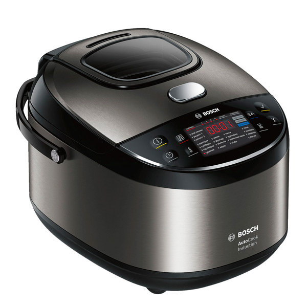

| Вопросы | Ответы |
|---|---|
| Что делает мультиварка? | Мультиварка делает приготовление пищи |
| Что включает основная функция мультиварки? | Основная функция мультиварки включает приготовление различных блюд с минимальным участием пользователя |
| Что имеет мультиварка? | Мультиварка имеет несколько режимов приготовления пищи |
| Что включают режимы мультиварки? | Режимы мультиварки включают варку, жарку, тушение, выпечку и приготовление на пару |
| Что определяет мощность мультиварки? | Мощность мультиварки определяет скорость и эффективность приготовления |
| Чем обычно покрыта чаша мультиварки? | Чаша мультиварки обычно покрыта антипригарным материалом |
| Чем может быть оснащена мультиварка? | Мультиварка может быть оснащена таймером для отложенного старта |
| Что обеспечивает сенсорная панель управления? | Сенсорная панель управления обеспечивает простоту использования мультиварки |
| Что позволяет мультиварка? | Мультиварка позволяет готовить без постоянного контроля |
| Что контролирует паровой клапан? | Паровой клапан контролирует выход пара из мультиварки |
| Что сохраняет функция поддержания тепла? | Функция поддержания тепла сохраняет приготовленное блюдо горячим до подачи на стол |
| Что может готовить мультиварка? | Мультиварка может готовить различные блюда от супов до десертов |
| Для чего разработаны программы приготовления? | Программы приготовления разработаны для оптимального времени и температуры приготовления |
| Что часто прилагается к мультиварке? | Книга рецептов часто прилагается к мультиварке для удобства пользователей |
| Что позволяют автоматические программы? | Автоматические программы позволяют выбрать нужный режим приготовления одним нажатием |
| Какой объем может иметь чаша мультиварки? | Чаша мультиварки может иметь различный объем, обычно от 3 до 6 литров |
| Что показывают индикаторы на дисплее? | Индикаторы на дисплее показывают текущий режим и оставшееся время приготовления |
| Что необходимо сделать перед первым использованием? | Перед первым использованием мультиварку необходимо промыть и просушить |
| Что позволяет функция отложенного старта? | Функция отложенного старта позволяет запланировать время начала приготовления |
| Что делает мультиварку подходящей для диетического питания? | Возможность готовить на пару делает мультиварку подходящей для диетического питания |
| Для чего предназначена функция медленного тушения? | Функция медленного тушения предназначена для длительного приготовления при низкой температуре |
| Что может заменить мультиварка? | Мультиварка может заменить несколько кухонных приборов, таких как пароварка и рисоварка |
| Что можно готовить в мультиварке благодаря функции поддержания постоянной температуры? | В мультиварке можно готовить йогурты и творог благодаря функции поддержания постоянной температуры |
| Что необходимо правильно установить перед приготовлением? | Перед приготовлением необходимо правильно установить все комплектующие мультиварки |
| Что обычно имеет мультиварка? | Мультиварка обычно имеет крышку с герметичным уплотнением |
| Что позволяет функция жарки? | Функция жарки позволяет готовить блюда с хрустящей корочкой |
| Что упрощает мультиварка? | Мультиварка упрощает приготовление сложных блюд благодаря автоматическим настройкам |
| Что важно соблюдать при использовании мультиварки? | При использовании мультиварки важно соблюдать инструкции по эксплуатации |
| Что должно быть правильно установлено перед началом работы? | Чаша мультиварки должна быть правильно установлена перед началом работы |
| Что следует периодически чистить? | Паровой клапан следует периодически чистить для предотвращения засоров |
| Что может готовить мультиварка? | Мультиварка может готовить каши, супы, плов и многое другое |
| Что сохраняет приготовление на пару? | Приготовление на пару сохраняет все полезные свойства продуктов |
| Что можно регулировать вручную в некоторых режимах? | Время приготовления можно регулировать вручную в некоторых режимах |
| Когда происходит автоматическое отключение? | Автоматическое отключение происходит после завершения программы приготовления |
| Что может иметь мультиварка? | Мультиварка может иметь режим подогрева и повторного разогрева пищи |
| Что позволяет готовить функция запекания? | Функция запекания позволяет готовить выпечку и запеканки |
| Что снижает мультиварка благодаря антипригарному покрытию? | Мультиварка снижает риск пригорания пищи благодаря антипригарному покрытию |
| Что позволяет настройка температуры? | Настройка температуры позволяет подобрать оптимальный режим для каждого блюда |
| Что экономит использование мультиварки? | Использование мультиварки экономит время и усилия при приготовлении пищи |
| Что может идти в комплекте с мультиваркой? | В комплекте с мультиваркой может идти мерный стакан и ложка |
| Что позволяет функция приготовления йогурта? | Функция приготовления йогурта позволяет создавать домашний йогурт |
| С чем рекомендуется ознакомиться перед использованием? | Перед использованием рекомендуется ознакомиться с инструкцией по эксплуатации |
| Для кого идеально подходит мультиварка? | Мультиварка идеально подходит для занятых людей и семей |
| Что такое рецепты для мультиварки? | Рецепты для мультиварки можно найти в интернете и специализированных книгах. |
| Что включает в себя правильный уход за мультиваркой? | Правильный уход за мультиваркой включает регулярную чистку и проверку на повреждения. |
| Что может включать приготовление блюд в мультиварке? | Приготовление блюд в мультиварке может включать несколько этапов с разными режимами. |
| Что позволяет готовить мультиварка? | Мультиварка позволяет готовить здоровую и вкусную еду. |
| Что идеально подходит для режима тушения? | Режим тушения идеально подходит для приготовления мясных и овощных блюд. |
| Что снижает мультиварка? | Мультиварка снижает количество посуды для мытья. |
| Для чего подходит приготовление на пару? | Приготовление на пару подходит для овощей, рыбы и других продуктов. |
| Что позволяет установка времени приготовления? | Установка времени приготовления позволяет точно следовать рецепту. |
| Что обеспечивает мультиварка? | Мультиварка обеспечивает равномерное приготовление пищи. |
| Что делает использование мультиварки сенсорное управление? | Сенсорное управление делает использование мультиварки удобным и интуитивно понятным. |
| Что может быть в комплекте с мультиваркой? | В комплекте с мультиваркой может быть паровая корзина для приготовления на пару. |
| Что позволяют автоматические режимы? | Автоматические режимы позволяют приготовить блюда без постоянного контроля. |
| Что может включать приготовление в мультиварке? | Приготовление в мультиварке может включать различные комбинации режимов. |
| Что сохраняет функция подогрева? | Функция подогрева сохраняет еду теплой после окончания приготовления. |
| Что позволяет приготовление в мультиварке? | Приготовление в мультиварке может использоваться для приготовления детского питания. |
| Что облегчает антипригарное покрытие? | Антипригарное покрытие облегчает чистку и уход за чашей мультиварки. |
| Для чего подходит мультиварка? | Мультиварка подходит для приготовления диетических блюд. |
| Что позволяет функция жарки? | Функция жарки позволяет готовить мясо и овощи с хрустящей корочкой. |
| Что идеально подходит для режима супа? | Режим супа идеально подходит для приготовления первых блюд. |
| Что очень удобно и быстро в мультиварке? | Приготовление каши в мультиварке очень удобно и быстро. |
| Что регулирует паровой клапан? | Паровой клапан регулирует давление и выход пара. |
| Что снижает мультиварка? | Мультиварка снижает риск ожогов при приготовлении пищи. |
| Что позволяет таймер отложенного старта? | Таймер отложенного старта позволяет начать приготовление в удобное время. |
| Что позволяют автоматические программы? | Автоматические программы позволяют готовить блюда без постоянного контроля. |
| Что включают в себя режимы мультиварки? | Режимы мультиварки включают тушение, варку, жарку и выпечку. |
| Что обеспечивает мультиварка? | Мультиварка обеспечивает равномерное распределение тепла при приготовлении. |
| Что позволяет функция йогурт? | Функция йогурт позволяет приготовить домашний йогурт. |
| Для чего идеален режим запекания? | Режим запекания идеален для приготовления выпечки и запеканок. |
| Чем покрыта чаша мультиварки? | Чаша мультиварки покрыта антипригарным покрытием. |
| Что происходит после автоматического отключения? | Автоматическое отключение происходит после завершения программы. |
| Что делает использование сенсорной панели управления мультиварки? | Сенсорная панель управления делает использование мультиварки простым и удобным. |
| Для чего подходит мультиварка? | Мультиварка подходит для приготовления различных блюд. |
| Чем легко моется чаша мультиварки? | Чаша мультиварки легко моется благодаря антипригарному покрытию. |
| Что обеспечивают автоматические режимы? | Автоматические режимы обеспечивают оптимальные условия для приготовления. |
| Чем экономит время мультиварка? | Мультиварка экономит время на приготовление пищи. |
| Что позволяют режимы мультиварки? | Режимы мультиварки позволяют готовить различные блюда с минимальным участием пользователя. |
| Что вмещает чаша мультиварки? | Чаша мультиварки вмещает различное количество ингредиентов. |
| Для чего подходит мультиварка? | Мультиварка подходит для приготовления как основных блюд, так и десертов. |
| Что позволяет функция запекания? | Функция запекания позволяет готовить пироги, хлеб и другие блюда. |
| Чем легко чистится чаша мультиварки? | Чаша мультиварки легко чистится благодаря антипригарному покрытию. | Как смотрится мультиварка? | Мультиварка смотрится устройством:  |
| Как демонстрируется приготовление? | Приготовление демонстрируется: 
|
| Как выглядит устройство? | Устройство выглядит следующим образом. |